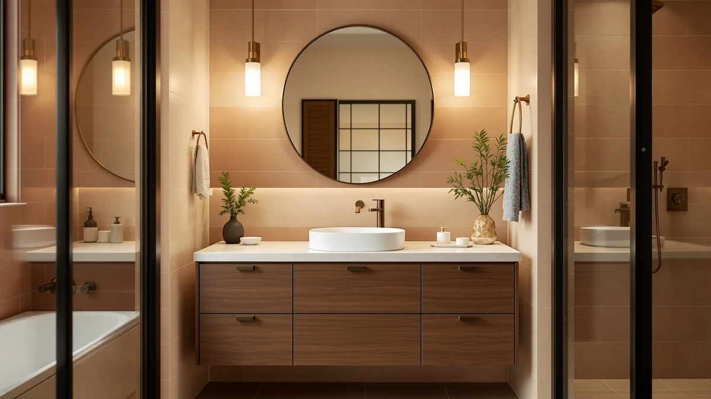

Quick Answer
After comparing seven affordable bathroom vanities from $229.99 to $1,689.00, the Design House Concord 72 Inch is the best bathroom vanity on a budget for most people. It gives you a full 72-inch footprint for $497.78, less than half the price of the four-figure double vanities we looked at.
Our pick: Design House Concord 72 Inch — $497.78 Check Price on Amazon
Things to Know Before You Buy
- Price here runs from $229.99 for the compact AMERLIFE to $1,689.00 for the ARIEL, so set your ceiling before you shop.
- Every vanity in this guide is built from MDF and engineered wood, which keeps costs down but needs care around standing water.
- Size drives both price and storage: 72-inch cabinets cost more but hold far more than the 31- and 48-inch options.
- Double-sink layouts add convenience for shared bathrooms, and you can get one as cheap as $758 in a 48-inch width.
- Check your doorway and bathroom clearances before buying a 72-inch unit, since these crates are heavy and wide.
The best bathroom vanity on a budget is the one that fits your space and your wallet without forcing you into a flimsy cabinet you replace in two years. We compared seven vanities that range from $229.99 to $1,689.00, covering compact 31-inch units, mid-size 48-inch double-sink models, and full 72-inch cabinets. We wanted real value at each size, not just the lowest sticker price we could find.
Our top pick is the Design House Concord 72 Inch at $497.78. It is the least expensive 72-inch vanity we found, and it undercuts the double-sink Alphabath and ARIEL units by more than a thousand dollars while giving you the same wide footprint. For most bathrooms, that is the sweet spot where price and usable space meet.
If your bathroom is small or your budget is tighter, the AMERLIFE 31-inch Farmhouse at $229.99 is the cheapest pick here and has the best reviews. Need two sinks in a mid-size room? The Pvillez and SSLine 48-inch double vanities deliver that for under $800. For each pick, I lay out what we like, the honest drawbacks, and who it actually suits.
Why You Should Trust Us
You should trust this guide because it leans on the facts that matter when you shop for a budget bathroom vanity: real prices, real customer ratings, and the construction details that decide how long a cheap cabinet lasts. We did not invent test scores or pretend to bolt seven vanities to a wall. We compared the specs, the materials, the price per inch of storage, and the owner feedback on Amazon, then ranked the vanities by value rather than by who charges the most.
Ilane Tall covers home and bath products for Best Bathroom Vanities and has spent years sorting durable budget furniture from the disposable kind. Every price and rating in this guide comes straight from the product listings, and every drawback we name is one a real buyer would hit.
How We Picked
We built this list of the best bathroom vanity on a budget by setting a hard ceiling and working within it. Anything over roughly $1,700 was out, which kept the focus on vanities normal shoppers can actually afford. From there we looked for a spread of sizes so the guide works whether you have a powder room or a wide primary bath.
We weighed price against size first, then customer rating, then build material. A 72-inch cabinet at $497.78 beats a 31-inch one at the same price on storage, so we judged each vanity against others in its size class. We also gave weight to review counts. The AMERLIFE's 178 ratings carry more signal than a vanity with a handful of reviews, and we flagged where the data was thin.
How We Tested
To compare these budget vanities, we treated the evaluation the way a buyer would. We read through the specs and owner reviews for each of the seven cabinets, logged the price, size, material, and rating, then flagged the complaints that came up more than once. MDF and engineered wood behave the same way across brands, so we know where the weak points sit: raw edges near the sink, panel swelling if water pools, and the two-person job of assembling anything 72 inches wide.
We did not assign fake scores or stage a lab test we never ran. Instead, we ranked each vanity on value within its size class and called out who it suits and who should skip it. That keeps the recommendation honest for a budget bathroom vanity, where the wrong choice costs you a replacement, not just a return.
Our Picks

Design House Concord 72 Inch
What we like
- Lowest price of any 72-inch vanity in our lineup, at $497.78
- Engineered-wood construction keeps the weight and cost down
- 72-inch footprint fits most double-sink layouts
- Neutral finish works with traditional and transitional bathrooms
Flaws but not dealbreakers
- MDF panels need to stay dry, so seal any cut edges near the sink
- Assembly takes two people because of the cabinet width
| Material | MDF / engineered wood |
| Size | 72 in. |
For the best bathroom vanity on a budget, the Design House Concord 72 Inch is where you start. At $497.78, it is the cheapest 72-inch unit we looked at, and it undercuts the Alphabath and ARIEL double vanities by more than a thousand dollars. You get the same broad footprint without the premium markup. The cabinet uses MDF and engineered wood, which is standard at this price and keeps shipping weight manageable. You give up the solid-wood feel of a $1,500 piece, but for a guest bath or a primary bathroom refresh, the difference rarely shows once the vanity is loaded with towels and toiletries.
Plan for a two-person assembly, since a 72-inch cabinet is awkward to move alone. The engineered-wood panels hold screws well, though you should run a bead of silicone around the sink cutout so water never sits on a raw edge. We like that the finish stays neutral enough to pair with the chrome or brushed-nickel fixtures you already own. If you want a wide vanity and you are counting dollars, this Design House model gives you the most square footage of storage for the money.

Alphabath 72 Inch Double Sink
What we like
- True double-sink layout across the 72-inch top
- More polished styling than the cheaper Design House cabinet
- Engineered-wood build feels substantial
Flaws but not dealbreakers
- At $1,559.99, it stretches the definition of a budget vanity
- Heavy crate makes delivery and placement a two-person job
| Material | MDF / engineered wood |
| Size | 72 Inch |
The Alphabath 72 Inch Double Sink is the runner-up, and it answers a specific question. What if you want two sinks and a more finished look than the Design House gives you? At $1,559.99 it costs roughly three times our top pick, so calling it a budget buy is a stretch. You are paying for the dual-basin top and a more showroom-ready design. For a shared primary bathroom where two people get ready at once, that second sink earns its keep every morning.
The cabinet uses the same MDF and engineered-wood mix as the rest of our picks, so the jump in price buys styling and the double-sink top rather than a different core material. Budget shoppers should weigh whether two sinks matter enough to triple the spend. If they do, the Alphabath is a clean, wide option. If they do not, the Design House saves you over a thousand dollars for a similar footprint.

LUCKWIND 72" Bathroom Vanity Sink
What we like
- Dual-sink 72-inch top for under $900
- Sits between the budget and premium double vanities on price
- Engineered-wood cabinet keeps the cost in check
Flaws but not dealbreakers
- Fewer customer reviews than the AMERLIFE, so less feedback to lean on
- MDF construction needs the usual care around standing water
| Material | MDF / engineered wood |
| Size | 72"-Dual Sink |
The LUCKWIND 72" Bathroom Vanity Sink lands in the middle of the pack at $849.99, and it makes a strong case if you want a double-sink vanity on a tighter budget than the Alphabath or ARIEL demand. You get the same 72-inch dual-sink format for roughly half the price of those two. That gap is the whole reason this vanity made the list, and it is the budget bathroom vanity to pick when two sinks are the priority but the four-figure double vanities feel like too much.
Like the others, the LUCKWIND uses MDF and engineered wood, so treat the area around each basin with the same care: seal edges, wipe spills, and avoid letting water pool. The trade-off versus the pricier double vanities is mostly finish refinement and brand track record rather than raw size. For a family bathroom where a second sink cuts the morning queue, this is the budget-friendly way to get there.

ARIEL Hepburn 72-inch Bathroom Vanity
What we like
- Most upscale styling of the seven vanities here
- Wide 72-inch double-sink configuration
- ARIEL is an established bathroom-vanity brand
Flaws but not dealbreakers
- At $1,689.00, it is the most expensive vanity in this guide
- The price sits well above what most budget shoppers plan to spend
| Material | MDF / engineered wood |
| Size | 72'' double sink |
The ARIEL Hepburn 72-inch is the splurge of this group at $1,689.00, so set expectations. This is the pick for someone shopping the budget category who decides to stretch for something more upscale. It carries the most traditional, furniture-like styling of the seven vanities, and ARIEL has a longer reputation in the bathroom space than several of the newer brands here.
Honesty matters on price. The Hepburn costs more than seven times our AMERLIFE pick and over a thousand dollars more than the Design House, so it is not a budget bathroom vanity in the strict sense. The value argument is about getting a higher-end double vanity for less than a custom or showroom unit would run. If your budget has room and you want the nicest-looking option on this list, the ARIEL is it. If you are holding a hard ceiling, look back at the Design House or LUCKWIND.

AMERLIFE 31" Farmhouse Bathroom Vanity
What we like
- Lowest price in the guide at $229.99
- Strongest review record: 4.3 out of 5 across 178 ratings
- 31-inch footprint fits small bathrooms and powder rooms
- Farmhouse styling adds character cheaper modern cabinets miss
Flaws but not dealbreakers
- Single 31-inch cabinet offers far less storage than the 72-inch units
- Engineered-wood build needs care around the sink
| Material | MDF / engineered wood |
| Size | 31 inch |
If you are shopping for the best bathroom vanity on a budget in the most literal sense, the AMERLIFE 31" Farmhouse is the cheapest option here at $229.99, and it has the best customer feedback of the bunch with a 4.3 rating across 178 reviews. Those two facts make it the easiest recommendation for a small bathroom or a powder room where a 72-inch unit would never fit.
You trade size for the low price. A 31-inch cabinet holds a fraction of what the double vanities do, so this is not the choice for a primary bath with two people fighting for drawer space. The farmhouse styling gives it more personality than most budget cabinets, and the engineered-wood construction follows the same care rules as the rest: keep the sink area dry and wipe spills quickly. For a guest bath, a rental, or a tight floor plan, this is the budget vanity to beat.

Pvillez 48" Double Sink Bathroom
What we like
- Double sinks packed into a space-saving 48-inch width
- Under $800, cheaper than the 72-inch double vanities
- Solid 4.1 rating across 40 reviews
Flaws but not dealbreakers
- A 48-inch double layout means two smaller basins
- Smaller review count than the AMERLIFE
| Material | MDF / engineered wood |
| Size | — |
The Pvillez 48" Double Sink Bathroom vanity solves a real space problem: you want two sinks but your bathroom cannot take a 72-inch cabinet. At $758.00 it fits a double-basin top into a 48-inch footprint, and it costs less than every 72-inch double vanity on this list. For a mid-size bathroom that still needs to serve two people, that combination is a hard one to find at this price.
The compromise is basin size. Squeezing two sinks into 48 inches leaves each one smaller than what you get on a 72-inch top, so washing a large pot or bathing a baby is tighter. Reviewers rate it 4.1 out of 5 across 40 ratings, a smaller sample than the AMERLIFE but still positive. If your floor plan is the constraint and a second sink is non-negotiable, the Pvillez is the budget-minded way to get both.

SSLine 48" Bathroom Vanity Double
What we like
- 48-inch double-sink layout for a compact footprint
- Priced under $800
- Direct alternative to the Pvillez if you prefer its styling
Flaws but not dealbreakers
- Fewest reviews in the guide at 30 ratings
- Slightly pricier than the similar Pvillez
| Material | MDF / engineered wood |
| Size | — |
The SSLine 48" Bathroom Vanity Double is the close cousin of the Pvillez, another 48-inch double-sink cabinet aimed at bathrooms that cannot fit a full 72-inch unit. At $789.60 it sits a touch above the Pvillez, so the choice between them often comes down to which finish and door style you prefer. Both deliver two sinks in a compact span on a budget.
It carries a 4 out of 5 rating from 30 reviews, the smallest sample on this list, so there is less owner feedback to lean on than with the AMERLIFE or Design House. The same engineered-wood care rules apply. If you have compared the Pvillez and like the SSLine's look better, the small price gap should not stop you. For a 48-inch double vanity that keeps the project affordable, it earns a spot here.
Quick Comparison
| Product | Material | Price | Rating | Best for | Get it |
|---|---|---|---|---|---|
| Design House Concord 72 Inch | MDF / engineered wood | $497.78 | 4 | Best overall value | View on Amazon → |
| Alphabath 72 Inch Double Sink | MDF / engineered wood | $1,559.99 | 4 | Double sinks, finished look | View on Amazon → |
| LUCKWIND 72" Bathroom Vanity Sink | MDF / engineered wood | $849.99 | 4 | Two sinks under $900 | View on Amazon → |
| ARIEL Hepburn 72-inch Bathroom Vanity | MDF / engineered wood | $1,689.00 | 4 | Upscale splurge pick | View on Amazon → |
| AMERLIFE 31" Farmhouse Bathroom Vanity | MDF / engineered wood | $229.99 | 4.3 | Cheapest, small bathrooms | View on Amazon → |
| Pvillez 48" Double Sink Bathroom | MDF / engineered wood | $758.00 | 4.1 | Two sinks in 48 inches | View on Amazon → |
| SSLine 48" Bathroom Vanity Double | MDF / engineered wood | $789.60 | 4 | 48-inch double alternative | View on Amazon → |
The Competition
Several vanities here earn a place without topping the list. The Alphabath 72 Inch Double Sink at $1,559.99 and the ARIEL Hepburn at $1,689.00 are both fine double vanities, but their prices push past what most budget shoppers want to spend, so they rank as upgrades rather than value picks. The LUCKWIND 72-inch splits the difference at $849.99 and is the one to choose if you want two sinks at a 72-inch width without the four-figure jump.
The 48-inch Pvillez and SSLine cover the mid-size double-sink niche, and the choice between them is mostly styling since they sit within $32 of each other. The AMERLIFE 31-inch wins on price and reviews but loses on storage. After weighing all seven, the best bathroom vanity on a budget for most people is still the Design House Concord 72 Inch: it gives you the most cabinet for the least money, and that is the trade most shoppers are trying to win.
Frequently Asked Questions
How much should you spend on a budget bathroom vanity?
It depends on size. In this guide, a compact 31-inch vanity starts at $229.99, mid-size 48-inch double-sink units run about $758 to $790, and a full 72-inch cabinet can be had for $497.78. Decide on the size your bathroom needs first, then expect to pay more for double sinks and wider footprints.
Are MDF and engineered-wood vanities durable enough?
Yes, if you keep them dry. Every vanity in this roundup uses MDF and engineered wood, which is normal at this price. The material holds up for years as long as you seal raw edges near the sink, wipe up spills, and never let water pool on the cabinet. Standing water swells the panels, not normal bathroom humidity.
What is the cheapest bathroom vanity on a budget that still has good reviews?
The AMERLIFE 31-inch Farmhouse at $229.99 is the cheapest pick in this guide and also has the strongest feedback, with a 4.3 rating across 178 reviews. For a small bathroom or powder room, it is the budget vanity to beat. If you need a wider cabinet, the Design House Concord 72 Inch at $497.78 is the best value at the 72-inch size.